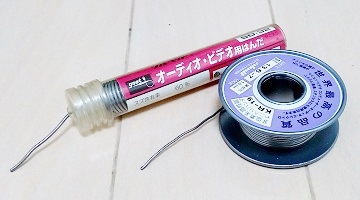
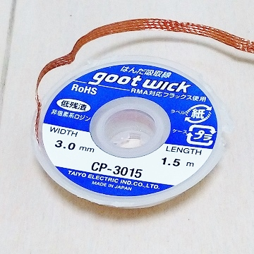

私のエフェクター自作方法【1】道具
2008年11月29日 カテゴリー：私のエフェクター自作方法
道具紹介です。価格はネット通販を参考に記載しています。刃物類にはできればお金をかけたいところです。
私のエフェクター自作方法 記事一覧はこちら

[1]はんだ（100円～）
直径1mm程度、スズ60%の普通のヤニ入りハンダで問題ありません。鉛フリーはんだや銀入りはんだは使いにくいらしく、私は使ったことがありません。こだわりたい方はとりあえず有名なkester44を使ってみるとよいと思います。
[2]はんだごて（800円～）・はんだこて台（700円～）・金たわし（100円～）
エフェクター製作には20W程度のはんだごてがよいと思います。ただポットやジャックに配線する際に時間がかかるので、スイッチを押している間パワーアップするタイプのものが便利です。
はんだこて台は火傷や火事防止のため重量があるしっかりしたものがよいです。金タワシは、はんだごての先をキレイにするのに使っています。

[3]はんだ吸いとり線（200円～）
はんだを取り除くときにはんだをしみ込ませて使います。はんだを吸引するハンダ吸取器というものもあります。
[4]ヒートクリップ（100円～）
これを部品の足につけていると熱を逃がしてくれます。コンデンサや半導体部品は熱に弱いので気休めに使っています。私は普通のクリップも結構使います。
[5]ラジオペンチ（100円～）
部品の足を曲げたり、ジャックやポットのナットの固定したりするのに使います。先が細めで、ギザギザがついていると使いやすいです。
[6]ニッパー（100円～）
部品の足や線材を切ります。100円ショップのはすぐ切れなったことがあるので、やめておいたほうがよいでしょう。
[7]ドライバー（100円～）
ノブを固定するとき小さいマイナスドライバーが必要です。セットで100円のものでも大丈夫です。
[8]アクリルカッター（100円～）
基板を切るときにあると便利です（普通のカッターでもなんとかなります）。
[9]ピンセット（100円～）
あまり使いませんが、あった方がよいでしょう。
[10]センターポンチ（100円～）
ハンマーで叩いて印を付ける道具です。ケースに穴をあけるとき、穴の中心がズレないようにします。
[11]ピンバイス（100円～）・ドリル刃（100円～）・ドライバーの取っ手（100円～）
穴あけの位置を正確にしたいとき、ピンバイスで少し穴をあけます。ドリル刃は鉄工用セットでOKです。六角軸と丸軸がありますが、丸軸だとセットできない電動ドライバーがあります。
昔私はドライバーの取っ手にドリル刃をつけて穴をあけていたので、かなり大変でした。やはり電動ドライバーがいいです。
[12]テーパーリーマー（800円～）
穴に挿し込み、グリグリっと力技で穴を広げる道具です。やりすぎると手にマメができます。太いDCジャックを使う場合、直径13mmまで広げられるものが必要です。
[13]電動ドリルドライバー（2000円～）
小型の充電式ドライバーは電池の持ちやパワーはあまり期待できません。充電式ではないAC100Vコンセントに繋いで使うタイプの方がよいと思います。
[14]ステップドリル（1500円～）
階段状になっているドリルです。簡単に目的の大きさの穴をあけることができるのでかなり便利です。
[15]デジタルマルチメーター（1000円～）
いわゆるテスターです。私は自作を始めた頃持ってませんでしたが、結局必要になってくると思います。できればコンデンサの容量を測定できるものがよいです。
[16]ワイヤーストリッパー（1000円～）
線材の皮膜を取る工具です。ハサミやカッターでもできるのであまり必要ないと思います。
（2016年9月更新）